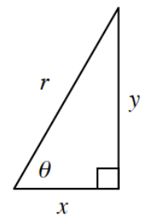
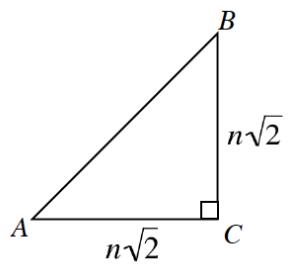

.figure-full image option. Homework Help text omitted. Figure filenames now use hyphens. Code comments included for easier editing.Let \(θ\) be an angle in the unit circle. List the quadrants where:
\(\sin(θ)>0\)
\(\cos(θ)>0\)
\(\tan(θ)>0\)
If \(\sin(θ)=\frac{3}{7}\), what is the value of:
\(\sin(θ+\pi)\)
\(\sin(2\pi-θ)\)
\(\cos(θ)\)
\(\cos(\pi-θ)\)
Evaluate each of the following expressions by using special right triangles and the unit circle (give exact values). Compute without a calculator
\(\sin\left(\frac{4\pi}{3}\right)\)
\(\cos\left(\frac{11\pi}{3}\right)\)
\(\sin\left(-\frac{5\pi}{6}\right)\)
\(\cos\left(-\frac{2\pi}{3}\right)\)
Right triangle, horizontal leg labeled, x, vertical leg labeled, y, hypotenuse labeled, r, angle opposite vertical leg, labeled, theta.In problem 2-58 you determined that \(\tan(θ)=\frac{y}{x}=\frac { \operatorname { sin } ( \theta ) } { \operatorname { cos } ( \theta ) }\) by using a unit circle. But what if the circle is not a unit circle? Consider the triangle in the diagram at right.
In the diagram, does \(\tan(θ)=\frac{y}{x}\)? Explain.
Use the diagram to write ratios for \(\cos(θ)\) and \(\sin(θ)\).
Use your ratios from part (b) to write and simplify an expression \(\frac { \operatorname { sin } ( \theta ) } { \operatorname { cos } ( \theta ) }\) that involves \(x\), \(y\), and \(r\).
Does \(\tan(θ)=\frac{\sin(\theta)}{\cos(\theta)}\) for any right triangle? Explain.

Right triangle, A,B,C, hypotenuse, A,B, vertical & horizontal legs, each labeled, n times the square root of 2.Use \(∆ABC\) at right to complete the following problems.
Calculate the exact length of \(\overline {AB}\) in terms of \(n\).
If \(n=2\), what is the value of \(\sin(A)\)? If \(n=12\), what is the value of \(\sin(A)\)?
In terms of \(n\), what is the value of \(\sin(A)\)?
What does this tell you about \(\sin(45°)\)?
What about \(\cos(45°)\)?

Roger is in an Algebra 2 class and has discovered the radian setting on his calculator. He has not learned about radians but would like to know what they are.
Explain to Roger how a radian is defined.
What are the steps Roger needs to do to covert \(240º\) to radians?
Show him how to change \(\frac { 5 \pi } { 6 }\) radians to degrees.
Let \(f(x) = 3x^3 + 7\) and \(g(x)=x^2-1\). Write an equation for each of the following function operations.
\((f-g)\left(x\right)\)
\(\frac { f ( x ) } { g ( x ) }\)
\((f·g)(x)\)
\(g(f(x))\)
Simplify the following radical expressions.
\(\sqrt { 27 m ^ { 11 } n ^ { 8 } }\)
\(\sqrt [ 3 ] { 54 a ^ { 12 } b ^ { 16 } }\)
\(6 \sqrt { x } ( 3 - 2 \sqrt { x } )\)
As the connected complexity of mathematical concepts evolve, your mathematical knowledge evolves as well. Previous knowledge provides the necessary skills to acquire new learning. If necessary, review the Function Notation Skill Builder, to strengthen your understanding of this topic.
Let \(f(x)=4x+7\) and \(g(x)=x^2-3\).
Evaluate \(f(12)-g(2)\).
Evaluate \(g(f(-1))\).
Write an equation for \(f(w+2)\).
Write an equation for \(g(k+5)\).
Let \(A=\left(-2,5\right)\) and \(B=(5,-2)\).
Calculate the distance between \(A\) and \(B\).
Write the equation of the line passing through points \(A\) and \(B\).